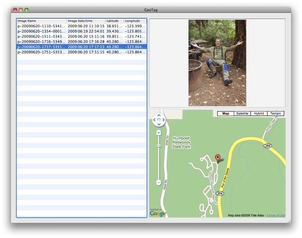
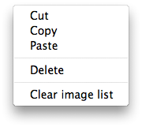

GeoTag Help: Adjusting the map location
Adjusting the geo-location data in images is as easy as clicking on a map. First select the image or images to adjust from the table of images to process on the left side of the application window. The selected image, or in the case of multiple selections the last selected image, will be displayed in the upper right of the application window. If the displayed image already contains geo-location data the map will center on the location from the image with a marker pointing to the exact position. It looks like this:
At this point you can:
- zoom and or scroll the map to the new location then click on the map. The marker will be moved to the new location.
- Drag the marker to a new location.
- Delete the location using the menu or the delete key. The marker will be removed from the map.
- Copy or cut the location from the image to paste into different images.
- Paste a previously copied or cut location into the images. The marker will change to show the new location.
You may Undo and Redo your changes or use the Revert to Saved menu option to bring your images back to the point they were when last saved. Location changes are not applied to the image until you Save your changes.
Notes: You can not Undo changes past a Save or Revert to Saved action. You can click on the map to add a location or change an existing location. You can also drag a marker to change an existing location.
A right click in the table of images will bring up the following context menu:
